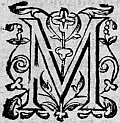
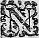
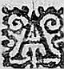
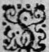

LE
SEPTIESME
LIVRE DE LA
SECONDE PARTIE
D'ASTREE.
Édition de 1610, p. 431.
Édition de Vaganay, p. 273.

MAIS il est temps de revenir à Celadon que nousη avons si longuement laissé dans sa caverne, sans autre compagnie que celle de ses pensées qui n'avoient autre sujet que son bon-heur passé et son ennuy present. Quinze ou seize joursη s'escoulerent de cette sorte, avec si peu de soucy de sa vie, que la tristesse le nourrissoit plus qu'autre chose qu'il se souciast de manger. Tout son plaisir estoit en ses imaginations, avec lesquelles il passoit les jours et les nuicts, qui luy estoient mesme chose, puisqu'esloigné des yeux d'Astrée, les uns et les autres ne luy sembloient que desde tenebres. Il n'avoit jamais eu accident en sa vie qui ne luy revint lors en la memoire, et par malheur
il s'arrestoit tousjours
davantaged'avantage en ceux qui luy avoient esté plus ennuyeux, comme plus convenables à l'estat ouil se
trouvoitou il se retrouvoit . Que si de fortune il s'amusoit quelque
temps aux autres, il se reprenoit incontinent de ce
qu'il tournoit en une saison si triste les yeux de son
ame sur quelque subject de contentement. Passant
son aage en ces tristes exercices, et prenant de si
mauvaises nourritures, son visage se changea de sorte
qu'il n'estoit pas cognoissableconnoissable Et ne faut point douter
qu'il estoit impossible qu'il vesquit long-temps,
si le ciel, qui peut-estre, le reservoit à quelque fortune meilleureη
, ne luy eust envoyé du soulagement.
Le jour mesme qu'il s'estoit eschappé
des mains de Galathée par l'aydeaide d'Adamas, de Sylvie et de Laonice
η
, Galathée fut contrainte de suivre sa mere Amasis à Marcilli à cause de quelques resjouyssancesη
et feux de joye qui se devoient faire pour les heureux
succez qu'avoient eu les desseins de Clidamant en l'armée des Francs. Mais quand elle y
fut arrivée, et qu'elle sceut que Celadon estoit
eschappé, elle entra en une si grande colere
contre Leonide, qu'elle luy defenditdeffenditη
sa presenceη
.
Cette belle NympheNimphe estant lasse du tracas de la Cour,
se retira chez son oncle Adamas, qui avoit mesme
soin d'elle, que si elle eust esté sa fille, tant pour
luy estre si proche, que pour la recommandation que Belizar son frere luy en avoit faictefaite à sa mort. Et
quoy qu'elle vist tous ses services passez estre
perdus, et qu'elle n'en devoit rien esperer, si estoit-elle bien aise d'avoir recouvré la liberté
à
ce prix ; mais plus encores pour l'esperance qu'elle avoit de voir Celadon, pensant qu'il fust aupres d'Astrée, ne se pouvant figurer que l'aymant avec tant de violence, le rude commandement qu'elle luy avoit faictfait le peustpeut empescher d'y retourner. Et quoy qu'elle sceust bien que ceste affection luy ostoit toute esperance d'estre aymée du Berger, si se representoit-elle que ce luy seroit une douce vie de passer sesles jours aupres de luy. Cela fut cause que trouvant Paris fort disposé à semblable visite deux joursη apres qu'elle fut arrivee chez son oncle, ils allerent ensemble dans le hameau de ces BergeresBergers : mais elle fut bien estonnée, quand demandant des nouvelles de Celadon, elle entendit qu'il n'y estoit point venu, et que tant s'en falloittant s'en faloit on l'y croyoit mort. Elle ne laissa toutesfois pour le contentement de Paris, qui estoit amoureux de Diane, d'effectuer le dessein qu'elle avoit faictfait pour le sien propreη , à sçavoir de visiter fort souvent ceste bonne compagnie, outre que veritablement il y avoit du plaisir pour elle en une si douce conversation. Vivant donc de ceste sorte elle se rendit si familiere parmy ces Bergeres, qu'elles l'aymoient infiniment, et par son commandement vivoient avec elle, comme si elle eust esté Bergere, à quoy elle se plaisoit, de sorte que soudain qu'elle pouvoit prendre quelque loisir, elle s'y en alloit quelquesfoisquelquefois en compagnie de Paris, et bien souvent seule, n'y ayant guereguiere plus d'une demie lieuë de la maison où elle demeuroit jusques aux hameaux de ces Bergeres, et le chemin encores estoit tant aggreableagreable ,
à cause de la douce riviere de Lignon, et des boccages qui s'y rencontroient qu'il estoit impossible de s'y ennuyer. Il advint donc qu'estant resoluë un jour de s'y en aller toute seule, elle alla passer sur le pont de la bouteresse : et descendant le long des rives de Lignon. Encores qu'il n'y eust point de sentier si pres de la rive, elle ne laissoit de s'y faire chemin pour le plaisir qu'elle prenoit de voir le poissonη , qui dans la claire eau de la riviere s'en alloit à petites trouppes, se joüant ensemble le long du bord, et poursuivant ainsi son voyage, se trouva sans y penser pres de la fontaine, où Celadon souloit cueillir le cresson dont il se nourrissoit. Et de fortune le Berger s'estant couché sur le bord, s'y estoit endormy un peu auparavant. D'aussi loing que la Nymphe l'apperceut, elle le prist pour Licidas, parce que ces deux freres estoient presque d'une mesme taille, et avoient accoustumé d'aller vestusη l'un comme l'autre, et quoy que Celadon fustfut un peu plus grand, et eust le visage beaucoup plus grand et plus agreable,si est-ce que s'approchant de luy elle y futfust deceuë : tant pource qu'elle creut asseurément que Celadon n'estoit pas en ceste contrée, que pour le changement de son visage, ou pour l'opinion qu'elle avoit que Licidas plein de jalousie, comme elle sçavoit bien qu'il estoit, se retiroit ainsi seul par ces lieux esgarez. Tant y a qu'elle s'assist aupres de Celadon, pensant qu'il fust Licidas, mais voyant qu'il ne s'esveilloit point, elle resolut de continuer son voyage, et le laisser en repos. Il estoit couché sur le costé, et le petit sac où il
souloittenir ses lettres paroissoit un peu hors de sa poche, d'autant que sa juppe s'estoit retroussée. Elle y porta curieusement la main, et le tirant doucement sans qu'il s'esveillast, fit dessein de voir ce que c'estoit, et le luy faire chercher quelque temps avant que de le luy rendre, si c'estoit chose qui en meritast la peine. Elle part donc avec ce larrecin, et laisse ce Berger endormy, qu' qui incontinent apres se resveilla. Et parce que le Soleil commençoit de passer sa chaleur plus ardanteardente , et qu'il ne s'estoit mis aupres de cetteceste fontaine que pour joüirjouyr du frais que son onde, et l'ombrage que des arbres voisins y conservoient ; il partit de ce lieu, et se mit dans le plus sauvage du bois. Mais d'autant que tout son entretien estoit de la memoire de sa Bergere, il ouvre la petite boitteboiteη η qu'il portoit au col, où estoit le pourtraictpourtrait d'Astrée, et apres l'avoir contemplé quelque temps, il leut les paroles qu'il avoit autresfoisautrefois escrites sur l'autre costé, qui estoient telles.
Privé de mon vray bien, ce bien faux me soulage.
Helas, disoit-il, ô miserable Celadon ! que c'est bien maintenant que tu peux dire, que privé de ton vray bien ce bien faux me soulage, puis que tu n'as plus que des biens imaginaires, les autres t'ayansayant esté ravis par la personne mesme de qui tu les tenois. Et puis considerant le pourtraict, et parlant à luy comme si c'eust esté Astrée mesme : - Est-il possible, disoit-il, ô ma belle Bergere ! que je vous aye despleu ? Mais est-il possible
que, vous ayant despleu je vive encore ? Que je vous aye despleu, il est impossible selon ma volonté : mais que je vive apres cette faute, il est impossible selon mon affection. Et demeurant sur cetteceste consideration quelque temps muet, il reprit ainsi la parole ; - Si elle veut que je vive, pourquoy me bannit-elle du lieu où seulement je puis vivre ? Et si elle veut que je meure, pourquoy ne me l'a-elle commandé absolument ? Mais quel plus exprés commandement faut-il que nous attendions que celuy qu'elle m'a faictfait de ne me presenter jamais devant elle ? Puis qu'elle sçait bien que sa veuë est ma vie, me defendant cettedeffendant ceste veuë, ne me commande-t'elle pas de mourir ? Et lors se reprenant : - Cela sans doute, disoit-il, suffiroit pour me faire chercher le trespas, si je ne sçavois que ce qui est raisonnableη au jugement des autres, est sans force de raison en elle. Il semble à chacun que c'est chose juste d'aymer celuy dont il est aymé, et que l'amitié ne se paye que d'amitié : et au contraire, elle juge raisonnable de hayr ceux qui l'adorent, pourquoy donc ne dois-je croire, que ce commandement de vivre esloignéeslongné d'elle, est plustost pour me faire souffrir davantaged'avantage en vivant, que pour me faire abreger mes peines par une mort avancée ? Mais ce n'est pas encor ce qu'elle veut de moy, puis qu'elle sçait bien que je ne puis vivre ainsi. A-t'elle jamais demandé de moy que des preuves impossibles ? Tesmoins, disoit-il peu apres, les commandemens que de bouche, et par lettres elle m'a faictsfaits si souvent de feindre d'aymer quelque autre, et rendre ceste feinte accompagnée
de ces veritables demonstrations qui sont ordinairement avec les plus parfaictesparfaites amitiez : Et lors resserrant ce cher pourtraict pour lire les lettres où ce commandement luy estoit faictfait : Or sus, disoit-il, vivons donc pour sa gloire, puis que nous ne le pouvons faire pour nostre contentement. Et à ce mot ayant remis sa petite boitte dans son sein, il voulut prendre les lettres qu'il portoit en sa poche, serrées dans un petit sac : mais l'y ayant quelque temps cherché en vain, il s'assit en terre, et espancha sur l'herbe tout ce qu'il avoit en l'une et en l'autre, et voyant qu'en effect ce qu'il cherchoit n'y estoit point, il ramasse dans un pan de son saye tout ce qui estoit en terre, n'ayant pas le loisir de le remettre en ses poches, et s'encourt en sa caverne pensant l'y avoir oublié. Mais apres beaucoup de peine, il ne le peutpeust trouver, car c'estoit ce que Leonide avoit desrobé. Il n'y euteust feuille en sa caverne, ny de sa caverne à la fontaine, ny de la fontaine aux lieux où il avoit esté ce jour-là, qu'il ne tournast et retournast de sa main, voire de petits festus qu'il n'y avoit pas apparence qui le puissent couvrir, tant estoit grand le desplaisir de cetteceste perte, et le desir de la recouvrer. Car outre qu'il tenoit ces lettres cheres, comme escrites de la main de sa Bergere, encore les aymoit-il comme les tesmoins et de son bon-heur et de sa fidelité, et comme le plus doux entretien qu'il peut avoir en la miserable vie qu'il menoit. En fin voyant qu'il se travailloit en vain, et qu'il n'y avoit plus d'esperance de trouver ces cheres lettres : - Helas ! dit-il, croisant les brasη l'un dans l'autre,
et regardant pitoyablement le Ciel, comme luy
demandant justice : helas ! quel injuste Demon m'a
ravy le peu de contentement qui me restoit ; Demon, pour certain faut-il bien qu'il soit, puis que nulle
personne n'a esté icy, et quand elle y eust esté, elle
n'eust peu avoir le courage de commettre une si
grande cruauté : puis despliant les bras, joignant les mains, et
entrelassant les doigts ensemble, laissoit aller ses
bras nonchalamment sur ses cuisses : - Tu estois encor
trop heureux, disoit-il, ô Celadon ! en cestecette
miserable vie, ayant ces heureux tesmoignages de ta
felicité passée : il ne falloit pas que la volonté
d'Astrée estant de te combler de toute sorte
d'infortune ces cheres et douces memoires contrevinssent à ce qu'elle avoit resolu. Console-toy
donc en ta perte, et remercie le Ciel qui se rend si
conforme à la volonté de ta Bergere, qu'elle mesme
ne le sçauroit desirer davantage, et fay paroistre
qu'il n'y a rigueur d'elle, ny force du Ciel qui t'en
lasse, ny qui t'en separe jamais. Aussi ne falloitfaloit -il
pas que pour te rendre affligé de toute espece de
malheur, tu perdisses toute espece de consolation.
Cependant
Leonide bien ayse de son larcin, s'estant
à grands pas esloignée de ce Berger, toute curieuse
alloit ouvrant les nœuds du petit sac ; et voyant
qu'il n'y avoit que des lettres, elle creut que
c'estoient de celles de Philis. Desirant donc outre-mesure de voir les secrets de cette Bergere, elle
s'assit sous un arbre, et les desployant toutes en
sonsont
giron, la premiere qu'elle rencontra, fut telle.

QUe vous m'aymiez je le croy, et vous le pouvez
cognoistre en ce que j'ay agreable que vous m'en
asseuriez. Que si vous aviez autant de cognoissance
que de ressentiment d'Amour, par la permission que
je vous donne de me dire que vous m'aymez, vous
jugeriezη
que je vous ayme, et par là vous seriez
asseuré que vous avez de moy, ce qu'il semble que vous
souhaittez seulement pour estre bienheureux. Si apres
cetteceste declaration vous n'estes content, je diray que
vous n'aymez point Astrée, puis que l'amitié ne doit
rien desirer que l'amitié.
Quand Leonide lisant cetteceste lettre rencontra le nom d'Astrée, elle s'arresta tout court, et approchant le papier de ses yeux, releut deux ou trois fois ce mot. En fin se ressouvenant de la jalousie qui avoit esté entre Celadon, Licidas, Astrée et Philis η , elle creut que peut estre n'estoit-elle pas mal-fondée, et qu'en effect Astrée pouvoit bien avoir aymé Licidas : et pource la repliant, la mit en son sein, et en prist une autre qu'elle trouva telle.

N
'Advouerez-vous pas
point
à ce coup, mon fils, que je vous ayme plus que vous ne m'aymez, puis que je vous envoye mon pourtraict, n'ayant jamais peu obtenir le vostre par toutes mes prieres ? Mais Amour est juste en cela, puis qu'il sçait bien qu'il faut tousjours secourir premierement ceux qui en ont plus de necessité. La foiblesse de vostre amitié avoit plus de besoin de ce souvenir, que non pas la mienne. Recevez-le donc pour tesmoignage de vostre defautdeffaut. Qu'en croyez-vous Celadon ? penseriez-vous estre aimé
aymé
de moy si je doutois de vostre affection ? Je me moque
mocque
, Berger : car si j'avois cette opinion de vous, je ne voudrois pas que vous eussiez ceste creance de moy. Et pource ne doutez point, tant que je vous feray paroistre d'avoir memoire de vous, que ce ne soit un gage tres-asseuré de l'estat que je fay d'estre veritablement aymee de mon fils.
- Seroit-ce point, disoit Leonide toute estonnée, que Licidas ayant trouvé apres la perte de son frere ces lettres entre ses meubles ?η plus chereschers , les eust il η gardées pour l'amitié qu'il luy portoit, ou de peur que ses secrets d'amour n'eussent esté veus par quelque autre. Mais si cela estoit, il ne les porteroit pas sur luy de crainte de les perdre. Que seroit-ce donc, et
comment les auroit-il euës ? Et lors jettant la main sur la premiere qui se presentepresenta , elle la trouva telle.

Il vous sied bien, mon fils, d'avoir moins de courage
que moy ! Vous dites que c'est un signe que j'ayme
moins que vous : mais voyez comme je l'entendsentens au
contraire. Ce qui me fait supporter toutes les peines
qui se presentent pour vous, c'est sans plus l'amitié
que je vous porte. Doncques cesteDonques cette affection qui me
fait surmonter les plus grandes peines doit estre la
plus grande, et ainsi ce courage que vous blasmez
en moy est une vraye marque de mon affection. Ne vous
laissez donc plus emporter à l'ennuy que vous donnent
nos communs ennemysennemis (c'est ainsi Celadon, que je les
nomme et non pas nos peres) si vous voulez que je
croye vostre amitié esgale à celle qui me fait non
seulement surmonter, mais mespriser pour vous toutes
sortes de peines et d'incommoditez.
Leonide leut ceste lettre, sans sçavoir presque ce qu'elle lisoit, parce que se representant
le Berger à qui elle avoit pris ce petit sac, et se ressouvenant d'en avoir ouy dire quelque chose à Galathee η , lors que Celadon futfust trouvé sur le bord de Lignon, elle entra en quelque opinion que ce fust luy ; et non pas Licidas : Et lors considerant de plus pres ces papiers, elle s'en asseura davantaged'avantage quand elle en vid quelques-uns qui monstroient d'avoir esté moüillez : mais beaucoup plus encores lors que regardant le sac, elle trouva que le cuir s'estoit retiré et ridé en certains lieux, car elle recogneutreconnut par là que veritablement c'estoit cestuy-cy dont Galathee luy avoit parlé. - O Dieux ! dit-elle, frappant des mains ensemble, il n'en faut point douter, c'est Celadon. Mais où avois-je les yeux, que je ne l'ay pas cogneuconnu quand je l'ay veu ? Et lors ramassant en diligence tous ces papiers elle les resserre, et s'en retourne bien plus viste à la fontaine où elle l'avoit laissé qu'elle n'en estoit pas venuë. Mais elle fut bien fachee de ne l'y trouver plus. - Ah ! fontaine, disoit-elle et vous sejour solitaire, rendez-moy ce que je vous ay laissé. Rendez-le moy ce Berger, duquel ne voulant interrompre le repos, j'ay perdu entierement le mien ! En proferant ces parolesparolles elle alloit tournant la veuë tout à l'entour, pour voir si elle en pouvoit apprendre quelque nouvelle. Mais elle n'avoit garde : car il s'estoit desja retiré tout triste en sa caverne, apres avoir cherché en vain ce qu'elle luy avoit desrobé. En fin Amour, qui est prudent, luy fist prendre garde que l'herbe depuis la fontaine jusques assez loingloin de là estoit foulee comme un sentier
nouveau, et qui n'est pas bien encor battubatu. Elle jugea, et certes fort à proposη , que ce sentier la conduiroit où s'estoit retiré ce Berger : Et de faict c'estoit la verité que Celadon, ayant accoustumé de passer par là lors que de sa caverne il s'en venoit en ce lieu, en avoit fait si souvent le chemin, que l'herbe en estoit foulee comme d'un nouveau sentier. Le prenant donc pour son guide, elle ne l'euteust point suivy, cinq ou six cens pas, qu'elle se trouve proche du Rocher où Celadon faisoit sa retraitte : toutesfois d'autant que les arbres et buissons qui luy estoient à l'entour, le couvroient tout, elle euteust presque peur de s'en approcher, craignant que ce ne fustfut le repaire de quelque loup ou sanglier, ou pour le moins de quantité de serpensserpents . Et comme elle estoit en suspens, il luy sembla d'ouyr souspirer : ce qui luy fit cognoistreconnoistre qu'il y avoit quelqu'un : mais jugeant aussi que les couleuvres et serpens sifflent quelquesfois presque de la sorte, elle ne s'en approchoit qu'avec apprehension, et si doucement que Celadon qui estoit dedans ne s'en apperceutaperceut point. Mais encor qu'à sa venuë, elle eust faiteut faict plus de bruitbruictη η , le Berger ne s'en fust pas pris garde, tant il estoit attentif à ce qu'il pensoit. Et lors que suivant le sentier qui la conduisoit, elle euteust fait le tour du buisson, et qu'elle fut venuë pres de l'entree par le costé de la riviere, elle l'ouyt souspirer beaucoup plus haut : et quelquesfoisquelquefois parler, mais elle n'en pouvoit entendre les paroles encor que le murmure de la voix, vint jusques à ses oreilles, cela fut
cause qu'avec plus d'asseurance, elle vint doucement jusques à l'entree, et se joignant contreη le Rocher, et puis mettant peu à peu la teste dedans, elle l'ouyt parler de cestecette sorte : - Commençons desormais à bien esperer, ô mon cœur, puis que tout ainsi que la mesche de la lampe acheve de brusler, lors que le feu a consumé toute l'huyle : de mesme devons nousnous devons croire que nostre mal-heurmal'heur finira, ayant desormais consumé peu à peu tous les biens et contentemens qui nous restoient. Heureuse perteη que je te cheris, si par ton moyen, je puis sortir de la miserable vie que je trainetreine . Ah ! que je beniray le jour que vous m'avez esté ravis, ô mes chers papiers ! si vostre regret me peut faire mourir, puis que je ne dois esperer que mes ennuis cessent, qu'avec ma vie. Leonide qui l'escoutoit, fut touchee de tant de compassion, recognoissantreconnoissant que veritablement c'estoit Celadon, et fut surprise d'une si soudaine joye, qu'encores qu'elle euteust resolu de le laisser plaindre et l'escouter plus long temps, si fut-elle contrainte de s'en aller à luy les bras ouverts en luy criant : - Ah ! Celadon c'est trop se plaindre, c'est assez avoir eu de tristesse et de desplaisir : il est temps de changer de vie, et de passer plus doucement vos jours. Si Celadon fut surpris oyant ceste voix tout à coup, et la voyant venir à luy : on leles peut assez juger, puis que depuis le temps qu'il estoit venu en ce lieu, il n'y avoit veu personne, et qu'ayant l'esprit entierement en ses pensees, elle fut aupres de luy avant qu'il eust seulementseullement ouy ce qu'elle disoit. Il se releva en sursaut : mais la surprise fut telle, qu'il fut
contraint de se rasseoir, tant la vie qu'il avoit menee, et la mauvaise nourriture qu'il prenoit ordinairement l'avoient affoibly. Lors la NimpheNymphe pour luy donner loisir de revenir à luy mesme, s'assit sur son lict, et luy prenant la main : - Et bien Celadon, luy dit-elle, en fin estoit-ce pour faire cestecette vie que vous desiriez avec tant d'impatience de sortir d'entre les mains de Galathee ? Est-il possible que nostre compagnie vous fustfut tant desagreable que vous la voulussiez fuyr pour celle des rochers et des bois ? Le Berger alors ayant repris ses esprits luy respondit froidement : - Vous voyez belle Leonide, à quoy m'a reduit Amour, et jusqu'où peut parvenir la puissance que vous avez sur ceux qui vous ayment. - Comment, dit-elle, est-il possible que l'Amour d'autruy vous aitay fait mespriser de cestecette sorte de vostre propre conservation ? - Mais est-il possible, respondit le Berger, que vous qui vous vantez de sçavoir aymeraimer , ayez doute que mon affection ne me puisse encorencore porter à de plus grandes extremitez ? - Pour le moins, repliqua la Nimphe : si j'avois à mourir, j'en voudrois demander la raison à celuy qui me condamneroit. - Et quelle autre meilleure raison, adjousta Celadon, dois-je desirer d'en sçavoir, sinon que celle qui peut tout sur moy le veut ainsi ? Tellement que la raison de mon mal sera que mon bien luy desplaistdesplait . - Miserable condition, dit la NimpheNymphe en le pleignant, que la tienne Celadon ! - Tant s'en faut, dit-il, voyez sage Nimphe, combien vous estes deceuë. Je ne sçaurois desirer plus de bien que le mal que je souffre ? car en pourrois-je souhaitter un plus
grand que de luy plaire ? Et si
mon mal luy plaistplait me pourrois-je douloir ? Tant
s'en faut ne me dois-je point resjouyr de ce qui
luy est agreable ? Et alors s'escriant : - O heureux
Celadon, dit-il, et en une chose moins heureux,
qu'Astree ne sçait pas que tu es heureux !
Leonide
luylui
oyant tenir ce langage, demeuroit tant estonnee qu'elle le regardoit avec admiration. En fin apres avoir esté quelque temps muette, elle dit :
- J'advouë Berger que si c'est aymer que ce que vous
faites, il n'y a que vous entre tous les hommes qui
sçachiez aymer : mais prenez garde que comme l'abus
se mesle ordinairement parmy toutes les choses bonnes
pour les corrompre et gaster, de mesme la melancolie et l'opiniastreté ne prennentprenent place parmy vostre
amitiéη
. - J'ay fort peu de soucy, respondit le Berger,
de tous les accidensaccidents qui me peuvent arriver, pourveu
que mon amour n'y soit offencee : - Mais, dit
Leonide, aymez-vous bien Astree ? - Vous me faites,
respondit-il, une demande à laquelle vous pourriez
bien respondre sans moy.
η
- Si vous l'aymez, continua
la NympheNimphe, vous devez doncdonques aymer ce qui est à
elle, et si cela est, pourquoy ne vous aymez-vous,
puis que vous estes tellement sien, que vous cessez
d'estre vous-mesme, - Puisque j'ayme Astree,
repliqua le Berger, je dois hayr tout ce qu'elle
haythait . Astree veut mal au miserable
Celadon :
pourquoy donc, belle NimpheNyimphe, ne luy porteray-je toute
la haynehaine qui me sera possible : - ChacunChascun , dit-elle,
est plus obligé à sa propre conservation qu'à la
haynehaine ou amitié d'autruy. - Ces loix, interrompitη
incontinent
le Berger, sont bonnes et recevables parmy les hommes mais non pas parmy les amants. - Et quoy, dit la NympheNimphe, laisse t'on d'estre homme quand on devient amant ? - Si vous appellezapellez estre homme, dit-il, que d'estre sujet à toutes sortes toute sorte de peines et d'inquietudes, j'advoüe que l'amant demeure homme : mais si cestc'est homme a une propre volonté, et juge toutes choses telles qu'elles sont, et non pas selon l'opinion d'autruy, je nie que l'amant soit homme, puis que dés l'heure qu'il commence de devenir tel, il se despoüille tellement de toute volonté et de tout jugement, qu'il ne veut ny ne juge plus, que comme veut et juge celle à qui son affection l'a donné. - O ! miserable estat que celuy de l'amant, s'escria la Nymphe : - Mais tant s'en faut, respondit incontinent le Berger, miserable celuy qui n'ayme point, puis qu'il ne peut joüyr des biens les plus parfaictsparfaits qui soient au monde. Et jugez, belle NympheNimphe, quels doivent estre les contentemens d'amour, puis que les moindres surpassent les plus grands qu'on puisse avoir en toutes les choses humaines sans amour. Y a-t'il rien de si aysé à divertir que les biens qui sont en la pensee. Et toutesfois, quand un Amant se represente la beauté de celle qu'il ayme : mais encor cela est η trop, quand il se remet seulementseullement une de ses actions en memoire, mais c'est trop encores, quand il se ressouvient du lieu où il l'a veuë, voire quand il pense qu'elle se ressouviendra de l'avoir veu en quelque autre endroitendroict , pensez-vous qu'il voulustvoulut changer son contentement à tous ceux de l'Univers ? tant s'en faut, il est si
jaloux et si soigneux d'entretenir seul cestecette pensee, que pour n'en faire part à personne, il se retire ordinairement en lieu solitaire et reculé de la veuë des hommes, ne se soucie point de quitter tous les autres biens que les hommes ont accoustumé de cherir et rechercher avec tant de peine, pourveu qu'avec la perte de tous il achepteachette le bien de ses cheres pensees. Or Leonide puis que les contentements de la pensee sont tels, quels jugerez-vous ceux de l'effect, quand il y peut arriver ? Comment, continuoit il, jouyr de la veuë de ce que l'on ayme ? L'ouyr parler ? luy baiser la main ? ouyr de sa bouche ceste parolecette parolle , je vous ayme. Est-il possible que la foiblesse d'un cœur puisse supporter tant de contentement ? est-il possible que le pouvant, un esprit les conçoive sans ravissement ? Et ravy qu'il ne s'y fonde et se sente dissoudre de trop de plaisir et de felicité ? Je ne raporte point icy les dernieres asseurances que l'on peut recevoir d'estre aymé, ny les languissemens dans le sein de la personne aymee, parce que, comme ces contentemenscontentements ne se peuvent gouster sans transport et sans nous ravir entierement à nous mesmes, aussi ne peuvent-ils estre representez par la parole que trop imparfaictement. Or dites maintenant, belle NimpheNymphe, que l'estat d'un Amant est miserable : maintenant dis-je que vous sçavez quelles sont ses extremes felicitez : - J'avouë advoüe dit la NimpheNymphe, apres l'avoir escouté avec admiration, j'advoüe que veritablement Celadon ayme, si c'est aymer que d'estre hors de soy-mesme, et vivre seulement de pensees : mais que pour cela je ne l'estime
miserable de le voir reduit aux imaginations pour avoir quelque contentement : tant s'en faut que ces parolesparolles me persuadentη le contraire, qu'elles me fortifient davantage en cested'avantage en cette opinion. Mais Berger, laissons ceces discours, puisqu'aussi bien il ne vous peut donner aucun allegementalegement , et me dictes quelle dites qu'elle a esté vostre vie, depuis que je vous laissay ? - Sage Nymphe, respondit Celadon, celle que vous m'avez veu faire depuis que vous m'avez rencontré, c'est celle-là mesme que j'ay continuee depuis le jour que vous dictesdites . Car au partir d'aupres de vous, je me suis venu renfermer en ce lieu, attendant que l'amour ou la mort m'en sorte. - Et pour quoy, dit-elle, n'allastes vous point en vostre hameau, ou vos amis et vos parens vous regrettentregretent si fort ? - Astree, dit-il, qui peut plus sur moy que mes parens ny mes amis, m'a deffenduη de me faire jamais voir à elleelles , jusques à ce qu'elle me l'ait commandé, et c'est pourquoy je vous ay dit que je me suis renfermé en ce lieu attendant que l'amour ou la mort m'en sorte, parce que si ma Bergere m'avoit absolument commandé de ne me faire jamais voir à elle, il n'y a point de doute que je fusse sorty de ceste vie, aussi tost que revenu à moy, je recogneusrecognus que Lignon ne m'avoit pas voulu donner la mort, mais ayant bonne memoire de ses paroles, et me ressouvenant que ce bannissement n'estoit pas pour tousjours : mais seulement autant qu'elle demeureroit à me commander de revenir, j'ay vescu de ceste sorte, attendant que l'amour me rappellast, comme
il semble qu'elle m'ait promis, où à son deffaut, la mort qui ne me sera jamais moins ennuyeuse qu'en l'estat où je suis. - Mais comment pauvre abusé, repliqua la NimpheNymphe, pouvez vous esperer qu'elle vous rappelle, si elle ne sçait pas où vous estes ? - Amour, respondit-il, qui m'a conduit icy, n'a pas oublié le lieu où je suis, puis qu'ordinairement il m'y vient entretenir : et puis que c'est par luy que je dois esperer qu'elle me r'appellerappelle , il ne faut point que je doute que sans moy il ne luy fasse bien entendre en quel lieu il m'a confiné. - Si vos imaginations, repliqua la Nymphe, pouvoient autant sur les autres que sur vous, il y auroit quelque apparence en ce que vous dites : mais croyez que les Dieux n'aydentη gueresaidentη guiere à ceux qui ne s'aydentaident point eux mesmes. Et ne pensez que je vous en parle sans raison : car je sçay fort bien que si Astree vous sçavoit en vie, elle vous desireroit aupres d'elle. - Et comment, dit incontinent le Berger, le sçavez-vous, belle NimpheNymphe ? - Je l'ay appris, dit-elle, de la tristesse que je vois en son visage. - Elle se trouve peut-estre mal d'ailleurs, dit le Berger : mais où l'avez vous veuë depuis que nous nous separasmesseparames ? - J'ay bien, luy dit-elle, à vous entretenir sur ces discours, et serois bien ayseaise de vous raconter ce qui m'est advenu depuis que nous nous quitasmesquitames , pourveu que je vous visse faire meilleure chere que vous ne faites pas. - Cela, dit Celadon, ne vous en doit pas empescher, et croyez que vostre veuë m'apporte autant de contentement qu'autre que je puisse avoir sans celle d'Astree, de laquelle estant privé,
le discours que vous me voulez faire m'est sur tout agreable. Alors Leonide reprit la parole de ceste sorte.
HISTOIRE
DE GALATHEE.

VOUs desirez donc sçavoir, Celadon de quelle façon
j'ay vescu depuis quinzeη
ou seize nuicts en çà. Je
veux bien le vous raconter, à condition que si je vous
ennuye par un trop long discours nous le coupperonscouperons où vous voudrez, et le reprendrons une autrefois,
quand l'occasion s'en presentera.
Sçachez donc que revenant de vous conduire, j'entrois
dans le palais d'Isoure
au mesme temps qu'Amasis
montoitη
dans son chariot pour retourner à Marcilly,
emmenant avec elle Galathee, parce que desireuse de
rendre graces à Hesus du bon succez que son fils
Clidamant avoit eu en la bataille qui s'estoit donnee
contre les Neustriens, elle voulut que Galathee y
fust, afin de rendre ceste solemnité plus celebre
η
: Et parce que le retardement de telles actions
ressemble en quelque sorte à l'oubly, et l'oubly à
l'ingratitude elle partit si promptement qu'elle ne
donna pas mesme le loisir à la Nymphe
Nimphe de nous pouvoir
dire ce qu'elle vouloit que nous fissions de vous.
Et quoy qu'elle en fustfut en une peine extreme, si n'osoit
elle en faire semblant, de peur qu'Amasis ne s'en prist garde, qui la tenoit tousjours par la main, non pas pour aucun soubçonsoupçon qu'elle eust, mais seulement pour la carressercaresser davantage. Estant doncquesdonques contrainte d'entrer ainsi avec elle dans ce chariot, tout ce qu'elle peut, ce fut de me dire lors que je luy aydois à monter : - Vous Silvie et Lucinde viendrez dans le mien, et nous suivez en diligence : Et moy baissant la teste et leur faisant une grande reverence, je montraymonstray d'avoir entendu ce qu'elle vouloit dire : mais je n'avois garde de luy obeyrobeir , car vous aviez pris un chemin bien different. Et quoy que je previsse assez son courroux, si ne pouvois-je me repentir de vous avoir rendu ce bon office, eslisant plustost la haine de la NympheNimphe, que de faillir à l'amitié que je vous porte. Toutesfois feignant que ç'avoit esté pour obeyrobeir à mon Oncle, le rencontrant avec Silvie qui me cherchoit, je leur racontay de qu'ellequelle η sorte vous estiez eschappé, sans que personne y eust pris garde : - Mais leur dis-je, je ne fus de ma vie plus surprise, que quand en entrant j'ay rencontré Amasis et Galathee, qui montoient en leur chariot : car j'estois perduë si elles m'eussent apperceuë hors de la porte ; encor ne sçay-je ce qui en sera, lors que l'on sçaura ce qui est advenu. Mais, mon Pere, luy dis-je en sousriant, et vous ma compagne, vous m'ayderez tousaiderez toutes deux à porter ceste charge. - Ma fille, me respondit Adamas, ne craignez jamais d'estre blasmee de faire ce que vous devez, ny de recevoir du desplaisir pour semblables occasions. Les
Dieux, desquels dependent tous les evenemens sont
trop justes pour consentir à une chose tant inique :
et si quelquesfoisquelquefois il y a des accidens qui luy
η
semblent
advenir au contraire, prenez garde ma fille qu'en fin le contentementη
s'en redouble, voire qu'il semble
que ce ne soit que pour nous l'augmenter. Et parce
qu'il est tres à propos que vous preniez peine de
conserver les bonnes graces de vostre maistresse,
Silvie tesmoignera que vous n'avez rien fait qu'elle
ne sçache bien : et afin de vous en descharger
davantage, je veux bien que toutes deux vous la
faciez entrer en soupçon de moy : car je ne seray
jamais marry qu'elle croye que je haysse ce qui est
contraire à la vertu, et vous permettrois de l'en
asseurer tout à faictfait , si ce n'estoit que pour la
detromper des faussesfaulses
imaginations que Climante luy
a données, il est necessaireη
que je ne luy sois point
odieux entierement.
Avec semblables discours, mon oncle taschoit de nous
donner courage, et nous faire continuer en ce loüable
dessein, puis prit le chemin du costé de Laigneu,
et nous celuy de Marcilly, non pas toutesfois sans
consulter ensemble, comme nous avions à respondre
à Galathee, afin qu'il n'y eust point de contrarieté
entre nous, sçachant assez qu'il n'y a œil plus vif
ny plus penetrant que celuy de la jalousie. Au
contraire la Nymphe alloit faisant dessein sur dessein,
pource qui estoit de la possession de sa chere Lucinde,
estimant mon esprit et loüantl'oüant
ma ruse, de vous avoir
fait vestir de ceste sorte, ayant esperance que cétcest habit luy
donneroit plus de commodité de vous avoir sans soupçon continuellement aupres d'elle : non pas, Berger, qu'elle consentist jamais à chose qui contrevint à son honnesteté, ainsi que j'ay tousjours recogneu par ses actions, mais desseignant de vous espouser, et ne l'osant declarer tant qu'Amasis vivra, elle pensoit de pouvoir jouyr longuement de vostre presence sous cestcet habit : Et quoy qu'elle ne peustpeut douter de l'affection que vous portez à la belle Astree, en se flattant, elle se figuroit que la veuë que vous auriez de ses grandeurs et magnificences l'emporteroit aysémentaisement par dessus l'amour d'une Bergere : de sorte que s'en allant ainsi la plus contente du monde, il n'y avoit rien qui luy donnast alors de l'ennuy que la longueur du chemin. Mais quand elle fut arrivee à Marcilly, et qu'elle ne vit point entre les autres Nymphes sa tant aymeeaimee Lucinde, en qu'ellequelle η inquietude fut-elle ? et avec quelle promptitude fit-elle semblant d'avoir affaire en sa chambre, et de la chambre au cabinet ? Moy qui prevoyois bien cet orage, je la suivois : mais non pas franchement comme de coustume : et faut que j'advouë que me sentant attainteateinte de quelque espece de trahison, je redoutoisredoutoy sa presence : Et toutesfois de peur qu'elle ne soupçonnast qu'il y eust de ma faute, aussitost que je m'ouys appeller, je courus vers elle, et m'ayant commande de pousser la porte sur moy : - Et bien (me dit-elle) Leonide, qu'est devenu Celadon ? - Madame, luy dis-je, contrefaisant un visage plein d'estonnement et de desplaisir, je ne sçaurois vous le dire : car aussi-tost que
vous estes partie, Silvie et moy l'avons cherché par tout le Palais, et n'avons laissé lieu que nous n'ayons inutilement visité, et ne pouvons penser qu'autre qu'Adamas en puisse sçavoir des nouvelles. - Comment dit Galathee, surprise de ceste responce si peu attenduë : vous n'en sçavez donc autre chose ? Et voyant que je ne luy respondois point : - Ne vous avois-je pas commandé, continua-t'elle d'en avoir plus de soin ? Est-ce ainsi que vous faites ce que je vous ordonne ? Et làla s'estant encor arrestee pour quelque temps, et voyant que je ne luy disois mot : - Allez me dit-elle. Leonide à ceste heureà cette heure mesmesmesme vers vostre oncle, et si Celadon y est, ramenez-le icy, autrement ne vous presentez plus devant moy, et vous asseurez que je n'oublieray jamais cetteceste offence que je ne vous aye fait ressentir combien elle m'est cuisante. La voyant en si grande colere, et ne voulant luy repliquer de crainte de l'aigrir davantaged'avantage , je luy fis la reverence, et sortis froidement du cabinet pour n'en donner cognoissance à mes compagnes. Silvie qui estoit aux escoutes, me suivit jusques hors de la chambre, et nous estant esloignees contre une fenestre, je luy racontay tous les discours de Galathee, et comme elle m'avoit commandé de me retirer. - Je sçavois bien, respondit Silvie, qu'il estoit impossible que cet affaire se finist sans la mettre en colere : mais j'eusse pensé toutetout autre chose, plustost que ce que vous me dites. Est il possible que ce desplaisir l'ait tant aveuglee qu'elle vous ait commandé de sortir de sa maison pour un soupçon
si mal fondé ? Et qu'est ce que chacun jugera
de vostre depart ? Et comment le couvrira t'elle à
Amasis mesme ? - Or bien ma compagne, me dit elle, en fin tout le mal
est tombé dessus vous, encores qu'egallementesgalement j'aye
contribué à la faute, si l'on doit ainsi nommer ce que
nous avons peudeu faire : mais puisqu'il en est ainsi,
j'auray soin de vous faire revenir le plus tost qu'il
me sera possible : cependant si l'on me demande la
cause de vostre absence, je diray qu'Adamas a supplié
Galathee de vous laisser pour quelque temps chez
luy, ayant intention de voir s'il pourroit faire
naistre quelque amitié entre Paris son fils et vous : et je ne le diray qu'en secret, afin qu'il s'esvente
moins. A ce mot nous nous baisasmesbaisames , et nous recommandant aux
Dieux, je vins trouver mon Oncle à qui je racontay
tout ce qui s'estoit passé.
Cependant
Galathee estant demeuree seule en son
cabinet, et voyant tous ses desseins tant esloignez qu'elle n'esperoit plus d'en pouvoir r'approcher
les occasions, fut tellement oppressee de ce
desplaisir, que s'abouchantabbouchant sur un petit lid vertverdη
η
, elle
demeura fort long temps sans respirer : mais en fin
y estant contrainte, elle reprit l'haleine avec un
grand helas ! et puis le redoublant par plusieurs fois,
apres s'estre relevee, elle jetta les yeux par hazard
sur un grand miroir, qui estoit vis à vis d'elle, et
s'y considerant toutetoutes
en larmes : - Helas ! Galathee,
disoit-elle, à quoy te sert cette beauté dont tu as
esté tant estimee par ceux qui
en estoient idolatres, puis qu'elle n'a peu
esmouvoir celuy à qui tu as tant desiré de plaire, et qu'elle n'est plus que la vile despoüille d'un Berger, voire si vile qu'il ne l'a pas seulement pour agreable ? Ne suis-je point la plus mal-heureuse du monde, puis que celuy que j'ayme, et qui n'a rien en soy de plus recommandableη que mon amitié la mesprise, et la fuit pour celle d'une vile et ingrate Bergere ? Helas desseins, dont les commencemens m'estoient si doux, et agreables, combien m'en est le progrez amer et fascheux ! Et lors s'estant teuë pour quelque temps, elle reprit ainsi en s'escriant : - Mais est-il bien vray, Celadon, qu'en fin tu ne m'aymes point ! Est il possible que je n'aye peu te retirer de l'affection d'une Bergere ? peut-il estre qu'une beauté rustique, une champestre, une sauvage ait eu plus de pouvoir sur ton ame que la mienne ! falloitfaloit -il que pour ma punition le Ciel te fist si aymableaimable et si peu adviséavisé ! Elle eust continué davantaged'avantage , n'eust esté que Silvie sçachant qu'Amasis la venoit voir, parce qu'on luy avoit dit qu'elle se trouvoittreuvoit mal, fit du bruit à la porte, et apres l'avoir ouverte, l'advertit de la venuë de sa mere. Elle incontinent se seichantsechant les yeux le mieux qu'il luy fust possible, se coucha de son long sur le lict, et se mit un linge sur les yeux, feignant de dormir : cela fut cause que Silvie ressortantresortant rencontra à lasa porte Amasis, à qui elle raconta le mal de Galathée, luy disant qu'elle ne croyoit pas que ce fust autre chose qu'une migreinemigraine , qui se passeroit aussi-tost qu'elle auroit un peu reposé. Elle la creut aisément, dautantd'autant que s'estant
approchée de Galathée, elle luy vit le visage tout en feu. La Nymphe à la venuë de sa mere, fit semblant de s'esveiller, et se levant en sursault luy fit la reverence, et tenant une main sur les yeux, reconfirma ce que Silvie luy avoit dit. Elle luy conseilla de se mettre au lict, et se reposer pour ce soir, afin qu'elle peustpeut mieux assister au feu de joye qui se devoit faire dans deux ou trois jours : Et apres avoir parlé à elle quelque temps, elle se retira pour luy en donner le loisir. Galathée qui estoit bien aise de cette excuse pour estre seule, fit sortir chacun de sa chambre, et s'estant deshabillée, se mit au lict, ne voulant autre aupres d'elle que Silvie, à qui elle ordonna de demeurer en sa ruelle, afin qu'elle la peustpeut entendre si elle l'appelloit. Silvie qui sçavoit bien quel estoit ce mal, preparoit les remedes qu'elle prevoyoit estre necessaires : mais elle fut bien deceuë, car la Nymphe demeura jusques à la nuict sans parler, comme si elle eust attendu que Silvie commençast. En fin quand l'heure du repas futfust venuë : - Allez-vous-en souppersouper , dit Galathée, et faictesfaites venir icy quelque autre, jusques à ce que vous soyez de retour : car quantquand à moy, je ne veux point manger. - Madame, respondit Silvie, je vous supplie que je demeure prés de vostre lict, aussi bien le repasη ne me sçauroit profiter, vous sçachant sans repos. - Vrayement, dit le Nymphe, ma mignonne, je vous en sçay bon gré, et croyez que je recognoistray cettereconnoistray ceste bonne volonté, sans que l'ingratitude des autres m'en empesche. Mais dites-moy tout franchement, je vous prie, luy
dit-elle, se relevant sur son lict, et tirant le rideau, n'avez-vous point pris garde comment Leonide a faictfait eschapper Celadon ? - Madame, respondit Silvie, si c'est ma compagne, il faut bien dire que c'est le plus finement que l'on sçauroit imaginer, car elle n'a jamais bougé d'avec moy : Et s'il vous plaist que je vous en die ce que j'en pense, je vous asseure, Madame, que je crois que si quelqu'un luy a donné le moyen de s'en aller, ce doit estre sans doute Adamas : parce qu'au mesme temps que vous avez commencé de disner : j'ay pris garde qu'il a tiré Celadon à part, et luy a parlé d'affection assez long temps. De plus, j'ay remarqué que quand il nous a veuës en peine de le chercher apres vostre depart il a hochéoché deux ou trois fois la teste en sousriant, et mesme quand nous sommes parties toutes affligées de ce que nous ne l'avions peu trouver. - Aussi bien, nous a-il dit, n'a-t'il que trop demeuré ceans, et eust esté à propos qu'il n'y futfust jamais entré. - Comment, ditdict Galathée, il est donc bien vray que Leonide n'y a point consenty ? - Madame, respondit discrettement Silvie, je ne vous asseureray pas qu'elle n'ait point de part à cette faute, mais je vous diray bien, que mon opinion est qu'elle n'y en a point, et que si quelqu'un est coulpable, outre l'ingratitude de ce Berger, je pense que c'est Adamas. - Ne me parlez-vous point de cette sorte, dit-elle, pour excuser vostre compagne ? vous estes trop bonne : car si elle avoit autant d'avantage sur vous, ne doutez point qu'elle ne s'en prevalustprevalut bien mieux. C'est la plus malicieuse et
la plus jalouse que je vis jamais de toutes celles qui s'approchent de moy, et principalementprincipallement quand je parle à vous. - Madame, respondit Silvie, jamais la consideration d'aucune de mes compagnes ne me fera manquer à ce que je vous dois : Et quant à leur envie et jalousie, cela ne m'en fera non plus jamais reculer : Et ne sçaurois en vouloir mal à Leonide : car je juge, que si elle ne vous aymoit point, elle ne seroit pas jalouse de celles qui vous approchent. - Ma Mignonne, dit Galathée, en luy prenant la teste dedes deux mains, et la baisant au front, il est tout vray que vous estes trop avisée pour vostre aage, et qu'à vostre consideration je veux rappellerr'appeller Leonide, à qui j'avois defendudeffendu ma maison : mais avec protestation que je veux que vous soyez la plus proche de ma personne, et que c'est à vous que je remettray tous mes secrets. Jusques icy vostre bas aage m'en a empeschée : mais je cognoisconnois à cette heure que si vostre corps est jeune, vostre esprit est vieux et sage. Et pource tenez-vous d'oren-là le plus prés de moy que vous pourrez, et sans que je vous appelle entrez librement par tout où je seray, car je le veux ainsi. Et afin que Leonide vous soit obligée, mandez-luy ce que vous avez faictfait pour elle, et qu'elle revienne. - Madame, respondit Silvie, en luy faisant une grande reverence, et au lieu de la main baisant son linceul, l'honneur que vous me faictesfaites est si grand, que je ne l'oubliray jamais, et ne sçaurois penser qu'autre consideration que vostre seuleseulle bonté vous ait peu pousser à me faire ce bien. Je le reçois comme
ceux que les Dieux nous envoyent outre nostre merite, et vous jure, Madame, que de volonté et fidelité je ne failliray non plus en ce que je cognoistrayconnoistray conserverη vostre service, qu'à ce que je dois aux grands Dieux mesmes. Et quant à ce qui touche Leonide, ne seroit-il point plus à propos que vous attendissiez le jour des feux de joye qu'Adamas y sera, afin que vous fassiez semblant de remettre cette offenseoffence à sa consideration ? - Mais, mamie, respondit-elle, c'est contre Adamas que je suis en colere, puis que c'est luy qui m'a faict ceste offensefait cette offence . - Madame, repliqua Silvie, me permettez-vous de vous dire un conseil que ma mere me donna quand je la laissay. Ma fille, me dit-elle, ressouviensressouvien-toy quand quelqu'une de tes compagnes t'aura faictfait desplaisir de ne leur faire jamais paroistre que tu leur en vueilles mal, que quand tu auras le moyen de t'en venger. Car si tu le fais en autre saison, cela ne servira qu'à l'aigrir davantaged'avantage contre toy, et à te faire ouvertement ce qu'elle ne faisoit qu'en cachettescachetes . Je veux dire aussi, Madame, que vous ne devez point faire paroistre la mauvaise satisfaction que vous avez d'Adamas que vous ne la luy puissiez faire ressentir, de peur que se voyant hors de vos bonnes graces, il ne face ou die chose qui vous rende encor plus de desplaisir. Ainsi par la prudence de cette jeune NympheNimphe, Galathée oublia une partie de la colere qu'elle avoit contre moy, et se resolut de n'en faire rien paroistre à mon oncle que la saison ne fustfut changée, dequoy Silvie m'advertitavertit incontinent, afin qu'Adamas ne faillit pas de se trouver aux festes
que Amasis preparoit.
Mais cependant
Polemas n'estoit point sans peine : car
il voyoit que par toutes les nouvelles qui venoient
de l'armée des Francs, il y avoit tousjours tant de
choses à l'advantageavantage de Lindamor que l'on parloit
plus de luy presque que de tout le reste, et que cela
estoit cause qu'il s'acqueroit merveilleusement la
voix de chacunchascun , et qu'au contraire on leη
tenoit
presque pour un faineant, de sorte qu'il sembloit, que
la gloire de son rival diminuast la sienne d'autant : mais ce qui luy faschoit le plus, c'estoit que la
ruze de Climanthe, dont je vous ay autrefoisautresfoisη
η
parlé
n'avoit rien faictfait à son advantage, et ne sçachant
pas ce qui en estoit advenu, il estoit le plus confus homme du monde : Toutesfois encor qu'il vist tous les
jours la Nymphe, et qu'il l'entretint bien souvent, si
n'osanosa -t'il luy en faire jamais semblant : Tant s'en faut, une fois que Galathee luy en parla, pour
esprouver si ce que je luy avois dit de la ruze de Polemas et de Climanthe estoit veritable, il
feignit de sorte de n'en sçavoir rien que la Nymphe perdit tout à faict la doute où je l'avois mise,
m'accusant en son ame d'avoir inventé cette menterie à l'advantage de Lindamor, ainsi que j'ay sceu
depuis par le rapport de Silvie, à qui la Nymphe racontoit toutes ces choses.
Cependant je passois une vie qui n'estoit point
desagreable, si j'eusse eu le bien que j'ay maintenant
de vous voir. Car, Celadon, il faut que vous
sçachiez que Paris est tellement devenu amoureux
de Diane, que delaissant sa premiere
façon de vivre, il ne s'habille plus qu'en Berger, et ne se soucie que des exercices de Berger. - Est-ce de Diane, dit Celadon, qui est fille de la sage Bellinde ? - C'est, respondit la NympheNimphe, de celle-là mesme. - Je vous asseure, adjoustaadjouta le Berger, que c'est bien une des plus belles, des plus sages et des accomplies Bergeres que je vis jamais, et qui merite une aussi bonne fortune, et je prie Teutates qu'il la luy envoye. - Je suis, dit la Nymphe, de vostre opinion, mais je ne croy pas que Paris l'espouse, car elle m'a dit quelquefoisquelquesfois que je luy en ay parlé, qu'à la verité elle ayme et honore Paris, et qu'elle cognoistconnoit bien l'honneur quiqu'il η luy fait de la rechercher, et l'advantage que ce luy peut estre : mais qu'elle ne sçait pourquoy, elle ne le peut aymer d'autre sorte, que comme s'il estoit son frere, qu'elle renonçoitreconnoit η bien ses merites, mais qu'il luy est impossible de l'affectionner d'autre sorte. - Comment, interrompitη Celadon, en sont ils desja venus si avant, et vous parle-t'elle si familierement de ces choses ? Je le trouve estrange, me ressouvenant de son humeur, qui est assez retenuë, voire mesme si retirée que ses compagnes qu'elle ayme le plus qui sont comme je crois, Astrée et Philis, sçavent fort peu de ses intentions. - O Berger, respondit la NympheNimphe, depuis les troisη ou quatre Lunes que vous n'y avez esté, tout y est bien changé. Car Astrée, Diane et Philis, ne sont qu'une mesme chose : elles sont ordinairement ensemble, et depuis vostre perte vous diriez que Diane a succedé à vostre place. De plus, vous avez autresfois veu Silvandre, que
l'on appelloit le Berger sans affection, il est maintenant si fort amoureux, que peut-estre si ce n'est Celadon, il n'y en euteust jamais en vostre hameau qui le futfust davantage, et cela luy est advenuavenu comme je vous vay dire. Philis et luy entrerent en different de leurs merites, et parce que le Berger qui a l'esprit vif, et a frequenté les escolesη des Massiliens, selon que je luy ay ouy direη , avoit des raisons plus fortes et plus pressantespressentes que la Bergere, elle, qui est d'une humeur tres-agreable, proposa que Silvandre pour rendre preuve de son merite, fustfut condamnéη de servir avec tant de discretion uneun Bergere, qu'il s'en fitfist aymer. Le Berger accepta ce qu'elle proposoit, à condition que Philis fustfut contrainte d'en faire de mesme. Apres plusieurs difficultez, Astree, Diane et moy, ordonnasmes, que tous deux serviroient une mesme Bergere, et que dans trois moisη cetteceste Bergere jugeroit lequel des deux avoit plus de merites pour se faire aymeraimer . Cela estant ainsi resolu, Diane fut esleuë pour estre servie de tous deux. De sorte que depuis ce temps Philis faictfait si bien la passionnée : qu'il n'y a Berger qui s'en sceut mieux acquitter. Or voyez ce qui est advenu de cette feinte. Silvandre, qui comme je vous disois, estoit jadis si desdaigneux, est en feignant devenu si esperduëment amoureux de Diane qu'il n'y a personne qui ne recognoisse bien qu'il outrepasse la feinte : et si je m'y sçay cognoistre, Diane donnera son jugement à son advantage. Car encor que la froideur et la modestie de cetteceste Bergere soient tres-grandes, si recognoistrecognoit -on bien qu'elle n'a
point sa recherche desagreable : et quant à moy, j'advouëavouë que horsmis Celadon je ne cognois Berger plus digne d'estre aymé. Et parce que cetteceste feinte recherche est cause que Philis est presque tousjours avec Diane, et que Silvandre ne laisse Diane que le moins qu'il peut, Licidas vostre frere a creu qu'il y avoit de l'amour entre Philis, et Silvandre, et se l'est tellement persuadé, qu'il a conceu une si grande jalousie qu'il ne les peut souffrir ensemble. Et d'autant que Philis ne peut se bannir de la compagnie d'Astrée, et que Diane est tousjours avec elle, et Silvandre aupres de Diane, le pauvre Licidas ne le pouvant souffrir, ne voit plus Philis que par des rencontres qu'il ne peut esviter. - Voila bien du changement, respondit le triste Celadon, et faut que j' advouëavouë qu'ils sont tous bien fort à plaindre, et Licidas sur tous, puis qu'il est retombé en cetteceste dangereuse maladie d'Amour. Mais je ne le trouve point estrange, ayant tousjours esté le naturel de mon frere de se laisser aller à ces impressions. Je proteste quant à moy, que nous ne sommes point freres de ce costé-là. Je ne veux pas nier que je n'aye esté une fois jalouxη : mais je crois que c'est que les amantsamans y sont subjets une fois en leur vie, comme l'on dit que les petits enfans le sont à de certaines maladies dangereuses qui ne leur viennent qu'une fois. Philis aussi n'est pas peu à pleindreplaindre , qui ayant donné tant d'asseurances de bonne volonté à Licidas, le voit toutesfois entrer en doute de son amitié. Mais je crois que la cognoissance qu'elle a que cetteceste jalousie en mon frere
n'est qu'un excez d'amour, luy faictfait porter ce desplaisir avec moins d'impatience. Quant à Silvandre, et à Diane, encores qu'il faille confesser qu'il estoit impossible que deux subjetssujets d'amour se puissent rencontrer plus esgaux : car si Diane en beauté et en biens de fortune surpasse Silvandre : la vertu et le merite du Berger les peutη bien contre peser : si est-ce que je les plains tous deux infiniment, parce que les ayant veu vivre tellement maistres de leurs actions, qu'il n'y avoit rien qui peustpeut interrompre leur repos que leurs affaires domestiques, et sçachant par experience en quel cahosη de troubles et d'inquietudes ils se vont plonger, il est impossible que je ne sois touché de pitié de leur voir faire un changement si desadvantageux. Voila, sage NympheNimphe, qui nous apprend qu'il n'y a point de bon-heur asseuré entre les hommes. - Celadon, respondit la NympheNimphe, je crois que vous seriez le mesme Teutates, si vous leur pouviez persuaderη qu'ils ne fussent beaucoup plus heureux qu'ils n'estoient autresfois, et mesme Silvandre, de qui la compagnie est au double plus aymable qu'elle ne souloit estre, à ce que j'ay ouy dire à ceux qui l'ont veu auparavant. - Quant à moy, dit Celadon, je suis en cela de l'opinion de ce Bergerη : car s'il y a en amour quelque peine, en quelle sorte de vie n'y enne a-t'il point ? mais si vous considerez quels sont les contentementscontentemens que l'on reçoit d'aymer, et d'estre aymé d'une personne qui le merite, je ne croy point que vous ne m'accordiez que ce n'est pas vivre heureusement, que de passer son aageâge sans amour. - Ah !
Celadon, dit la NympheNimphe, avec un grand souspir, combien sont cherement vendus ces contentementscontentemens que vous dites ! Je m'en remets à vous-mesmemesmes , si vous en voulez advoüeravoüer la verité sans passion. - Tous ceux qui ayment repliqua Celadon, ne rencontrent pas des Astrées. - Mais, adjousta Leonide, si vous avez cetteceste opinion, pourquoy disiez vous que vous le plaigniezpleigniez ? - Parce, respondit Celadon, que tout ainsi que c'est une douce chose de vaincre à la luitte ou à la course, tout au contraire d'estre vaincu : de mesme je crains qu'y ayant beaucoup de travail en l'amour, ils ne soyentsoient vaincus ou estonnez par les difficultez, et ne s'en retirent avant que de les avoir surmontées. Et n'ay-je pas raison de plaindre ceux que je vois entrer en ce danger dont l'issuë est incertaine ? Mais je m'estonne comment vous avez tant appris des nouvelles de Diane que j'ay tousjours cogneuëcognuë pour la plus secrette de nos Bergeres. - L'amour de Paris, respondit-elle, en a esté cause, qui me l'a faictfait voir plus souvent que je n'eusse pas faictfait . Encor que j'eusse beaucoup de volonté d'aller en vostre hameau, pensant que vous y fussiez, et lors que j'estois en peine d'ende trouver quelque bonne excuse, Amour me fitfist rencontrer Paris, qui ne voulant perdre l'occasion qui se presentoit, dés le soir que j'y arrivay, me parla de cetteceste sorte : - Ma sœur (car Adamas veut que nous nous nommions frere et sœurη ), ne vous ressouvenez-vous plus du contentement que vous eustes la nuit que vous couchastescouchates aux hameaux d'Astrée et de Diane, et combien leur conversation est agreable ?
Moy qui sçavois bien qu'il y avoit esté plusieurs fois depuis, je luy respondis : - Si fay, mon frere, mais j'ay opinion que vous en avez eu meilleure memoire que moy à ce que j'ay ouy dire. - Il est vray, me dit-il, et je ne nieray point, que leurs merites ne m'ayent donné plus de volonté d'acquerir l'amitié de ces belles et sages Bergeres, que je n'en ay faictfait paroistre. - O ! mon frere, luy dis-je, vous m'en dites plus que je ne vous en demande. - Je voy bien, me repliqua-t'il en sousriant, que c'est que vous voulez dire, et je le vous advouë librement, afin de vous convier à ne refuser point une requeste que je vous veux faire, vous en conjurant par cetteceste consideration, et par toute nostre amitié. - Puis que c'est par nostre amitié, luy dis-je, demandez ce que vous voudrez, car il n'y a rien que je refuse à mon frere, estant ainsi conjurée. - Je vous supplie donc, continua-t'il, que cependant que vous ne retournerez point à Marsilli, vous vueillez aller sur les rives de Lignon passer les apres-disnées en la compagnie de ces belles et sages Bergeres, et je vous y suivray. Aussi bien trouverez-vous icy les jours fort-longs, ayant accoustumé la Cour de Galathée, outre que les rivages de Lignon ont des ombres fraischesfresches et si plaisantes, qu'il est impossible de s'y ennuyer. On y voit l'onde claire et nette, si peuplée de toute sorte de poissonsη , qu'à peine se peuvent-ils couvrir de l'eau. Vous y entendez millemilles sortes d'oyseaux, qui des proches boccages font retentir leur voix avec mille Echos. Il y a des fontaines si fraisches et claires, qu'elles convient
les moins alterez d'en boire. - Bref, luy dis-je, en sousriant, on y rencontre des plus belles et agreables Bergeres de toute la contrée. - Il est vray, me dit-il, et tout cela ne vous doit-il pas convier d'y aller ? - Tout ce que vous me racontez, luy dis-je, ne m'esmeut point au prix de la volonté que vous en avez : car pour toutes ces choses, mon frere mon amy, je viens du Palais d'Isoure, où j'ay bien eu le loisir d'en passer mon envie. Mais puis que vous desirez que j'aille voir ces Bergeres, je le feray, pourveu que vous me disiez à laquelle vous en voulez : je veux dire si c'est à Astrée, ou à Diane. - Vous estes devenuë bien curieuse en peu de temps, me dit-il. - Je l'advouë, luy respondis-je : mais cela ne m'empeschera pas que je ne vous face cette demande encor une fois, et que si vous me la refusez, je ne die qu'en peu de temps aussi, vous estes bien devenu secret, puis que vous m'en disiez auparavantη plus que je n'en voulois sçavoir. - Et quoy, ma sœur, me dit-il, ayant si peu de merites, pourriez-vous penser que je m'addressasseadressasse à la justiceη ? - Je vous entends, luy dis-je, vous voulez dire Astrée, mais aussi mon frere, prenez garde que la veuë de cetteceste Diane ne vous face devorerη à vos desirs. - Or considerez, me repliqua-t'il, en quel estat je suis. Je vous jure, ma sœur, que je voudrois estre en danger d'en estre mangé, voire de mes chiens, aussi bien qu'Acteon, pourveu que j'eusse le bon-heur de voir cetteceste Diane nuë. - Est-il possible, luy dis-je, que vous fassiez si peu de conte de vostre vie ? - Ce n'est pas, me respondit-il, que j'estime peu
ma vie, mais c'est que j'estime
infiniment la veuë de tant de beautébeautez . Et puis qu'aussi bien il faut mourir, et que peut-estre
la vie me laissera sans avoir ressenty nul
contentement esgal, n'ay-je pas raison de ne la plaindre point, pourveu qu'avec un tel prix cetteceste felicité me soit acquise ? - Quant à moy, respondis-je,
je ne vous blasmeray jamais d'une si belle eslection,
mais je ne laisseray pas d'en craindre la peine pour
vous. - Ma sœur, me dit-il, la difficulté est la
pierre où les desirs s'aiguisent. Mais, dites-moy
franchement, serez-vous à ma consideration une heure
du jour Bergere ? - Comment, dis-je, que je prenne
leur habit comme vous celuy de Berger ? - Non pas cela, me dit-il : car outre que ce vous seroit de
l'incommodité, encore ne rapporteroit-il rien à
l'acheminement de ce que je desire. Je veux seulement
estre aupres de ces Bergeres, feignant de vous y
accompagner. - Je feray mon frere, tout ce que vous
voudrez, luy dis-je, mais prenez garde que cetteceste couverture ne nuise à vostre dessein : car voyant de
cetteceste sorte Diane, elle ne vous sera point obligée de vostre veuëη
. - Celle, me dit-il, dont vous parlez
n'est pas personne qui se paisse de sesη
vanitez, et
qui n'ait assez de jugement pour discerner mes
actions, et les discernant en loüer la discretion :
outre que la cognoissance qu'elle aura de mon amour
par sesces
η
visites sera la moindre d'une infinité que je
luy donneray à toutes les heures.
Cette resolution fut donc prise de cetteceste sorte entre
nous, et désdez le soir mesme Paris fit entendre
à Adamas que s'il le trouvoit bon il m'accompagneroit à la chasseη où j'avois envie d'aller le lendemain. - Non pas, luy dit-il, là seulement, mais par tout où elle voudra : car j'en ay tant aymé le pere, que quoy que je fasse je ne m'acquitteray jamais envers la fille de l'amitié que je luy ay portée. Paris n'attendoit que cetteceste declaration pour parachever son dessein : cela fut cause que le lendemain apres avoir disné de bonne heure, nous descendismes la colline de Laigneu, et passant la claire riviere de Lignon sur le pont de Trelin, nous vismesη , suivant la riviere, jusqu'aupres de la Bouteresse, où remontant un peu, et laissant le temple de la Bonne deesse à main-droictedroitte , nous vinsmesvimmes sur un lieu relevé, d'où nous pouvionspouvons voir presque tous les destours de Lignon, et les lieux où les Bergers menent paistre leurs trouppeauxtroupeaux , mesmemesmes nous y enη vismes, qui pour estre trop esloignez, ne peurent estre recogneusreconnus de nous. Et lors que par un petit sentier nous commencions à descendre dans la plaine : - Voyez-vous, luy dis-je, mon frere, en la luy monstrantη du doigt, cetteceste touffe d'arbres, qui est à main-droictedroitte , et qui s'approche un peu du bord de la riviere, c'est le premier lieu où je vis jamais Astrée, Diane et Philis : et si vous eussiez esté avec moy au lieu de Silvie, vous eussiez peut-estre appris plus de leurs nouvelles que nous ne fismes : car lassées du chemin nous nous y endormismesendormimes , et cependant ces trois Bergeres se vindrent asseoirassoir de l'autre costé, sans nous avoir apperceuës, et ne faut point douter qu'elles n'y demeurerent
muettesη : mais par malheur, quand nousη esveillasmesesveillames elles partirent. Il est vray que depuis j'y revins seule au retour de Feux η , et ce fut lors que vous me rencontrastesrencontrates , et que j'y apprisapris bien des nouvellesη de Diane. - Ah ! ma sœur, me dit-il soudain, que j'ay bonne memoire de ce que vous me dites. Ce fut au temps que je commençay d'aymer autruy plus que moy-mesme. Mais par la chose que vous aymez le plus, je vous supplie de me dire ce que vous en sçavez : Ayme-t'elle quelque chose ? - Voyez, luy respondis-je en sousriant, comme vous estes desja devenu jaloux, et que seroit-ce de vous, si vous en sçaviez davantage ? Contentez-vous que je vous en diray ce que je cognoistray estre necessaire que vous sçachiez. - Mauvaise sœur, me dit-il, vous me traicteztraittez comme les enfans ausquels on monstre des pommes pour leur en donner seulementseullement envie, et apres on les leur refuse. - Aussi, luy dis-je, les Amants ne sont guereguiere differents des enfans. - Et quoy, continua-t'il, je ne sçauray doncquesdonques point à cette heure si elle ayme ou non ? - Il y a plus de danger, luy dis-je, qu'elle ne vous vueille point aymer, qu'il n'est pas à craindre qu'elle en ayme quelqu'quelque η autre. - Quoy que vous me fassiez, dit-il, une fort grande menace, si suis-je plus aiseayse de l'asseurance que vous me donnez qu'elle n'ayme personne, que je ne suis en peine de la doute que vous avez qu'elle ne me vueille point aymer. - Et pourquoy, luy respondis-je, ne voudriez-vous point avoir un bien, si quelque autre y avoit part ? - Pour vous respondre, dit Paris, il faudroit faire une longue
distinction des biensη
? si vous diray-je briefvement qu'il y en a qui sont d'autant meilleurs qu'ils sont plus communicables,
et d'autres d'autant plus à estimer qu'ils se
communiquent moins, et en ce dernier ordre il faut
selon mon opinion, que les biens d'amour soient
mis. - Je croy, respondis-je, que si j'estois capable
d'aymer j'en aurois ceste
mesme creance, mais que cestecette peur ne vous diminue
point les faveurs que vous en recevrez : car vous
devez estre tres-asseuré que celles qu'elle vous fera
(si toutesfois ce bien vous arrive) pour certain, ne
seront point communes.
Or
Celadon je vous ay faict tout ce discours par le
menu
afinà fin que vous jugiez de qu'ellequelle
η
sorte Paris
est vivement attaint : maintenant je vous diray
quelque chose de Silvandre, et de Licidas.
Descendant donc de cestecette sorte dans la plainepleine nous
apperceumesaperceusmes
Sylvandre qui assis aupres de quelques
arbres estoit tellement attentif à chanter au son
de sa cornemuse qu'il ne se prenoit garde que Diane
l'ayant recogneu à la voix passoit doucement
derriere le buisson pour l'escouter sans estre veuë ; Et Diane estoit si desireuse de l'ouyr qu'elle ne
voyoit pas Astrée, et Philis, qu'ilqui
η
la regardoient
faire, qui touchees d'une semblable curiosité,
passoient d'un autre costé pour n'estre veuës ny
de Diane ny de Sylvandre. mais nous eusmes bien du
plaisir à considerer Licydas, qui estant sur une
motte un peu plus relevee regardoit, Philis se
traisnanttrainant en terre lentement pour n'estre point veuë
de Silvandre.
Car ayant opinion que l'amour qu'elle
portoit
à ce Berger luy donnoit la curiositéη de l'ouyr, il demeuroit tout deboutη les brasη croisez, et les yeux à ce que nous pouvions juger tellement sur elle qu'il sembloit immobile. Je ne l'eusse pas recogneurecognu de si loing sans Paris qui les voyoit tous bien souvent. Or cependant que nous descendions nous vismes que tout à coup vostre frere enfonçant son chapeau, et tournant le dos à sa Bergere, s'en venoit droit a nous sans nous voir, quelquesfois les bras estendus et regardant le Ciel, et d'autresfois se les croisant sur l'estomac, et tenant les yeux en terre. L'action où nous le vismes nous donna volonté d'ouyr les parolesparolles qu'il disoit et pource nous cachant derriere quelques hayes, qui estoient le long du chemin, nous prismes garde que tout à coup il se laissa choir, comme si quelque mal luy fust survenu. Nous nous avançasmes pour voir ce qu'il deviendroit, et nous estant approchez doucement de luy nous ouysmes qu'apres quelques souspirs il parla de cestecette sorte.
SONNET.
Qu'il est jaloux avec raison.
AMour qui dans mon cœur vas lisant mes pensees
Dans mon cœur où ta main tous les jours les escrit,
Ne voy tu qu'un soupçon maugré toy les aigrit,
Quoy qu'avec tes douceurs elles soient commencees ?
Tant de sermensserments jurez, tant de preuves passees
Ne scauroient r'asseurer à ce coup mon esprit,
Puis qu'austrefois, Amour, elle mesme m'aprit,
Que les voix d'un amant sont enfin exaucees.
Dieux s'il est vray, qu'en fin l'on exauce un Amant,
Ne suis-je point jaloux avecques jugement ?
Qui ne le seroit point, ce seroit une souche.
Je l'ay veu de mes yeux devant elle à genoux,
La voila qui ne pend que de sa seuleseulle bouche,
Et qui seroit l'amant qui n'en seroit jaloux ?
A peine avoit-il parachevé ces vers, que nous le vismes tout à coup se relever, et se haussant sur le bout des pieds regarder ce que faisoit Philis, et peu apres au petit pas s'approcher d'elle, s'en retournant d'où il estoit venuvenue . Nous ne fusmes point apperceusaperceus de luy, parce qu'il avoit tellement toute sa pensee en sa Philis, que quand nous eussions esté devant ses yeux, je croy qu'il ne nous eusteut point veus. Nous le suivismessuivimes de loingloin , et lors qu'il se cacha aupres de Philis, nous en fismes de mesme pour ouyr Silvandre qui chantoit ces vers quand nous y arrivasmes.
I.
AMour grand artisanη
a faictfait un autre Monde,
La terre c'est ma foy, qui n'a nul mouvement,
Et comme l'Univers sur la terre se fonde,
Ma foy de ce beau Monde est le seur fondement.
II.
Que si quelques soupçons d'une jalouse guerre
Esbranlent en mon cœur ceste constante Foy.
C'est comme quand les vents sont enclos dans la terre
Qui par des tremblemens la remplissent d'effroy.
III.
Mes pleurs sont l'occeanOcean , aussi tarir mes larmes
N'est un moindre dessein que d'espuiser la mer :
La peur de n'estre aymé cause de tant d'allarmes,
C'est l'orage qui fait cestecette mer escumer.
IV.
CesteCette mer est amereη
, encoreencores que ses ondes,
Ne soient qu'un grand amas
dedes fleuves qui sont doux ;
Plus amers sont mes pleurs, et leursles sources fecondes,
Plus douces à mon cœur comme venant de vous.
V.
L'air c'est ma volonté qui libre en sa puissance,
A l'entour de ma foy va tousjours se mouvant,
Les vents sont leursmes
η
desirs ardansardents
desde
leur naissance,
Dont s'esmeut mon vouloir comme l'air par le vent.
VI.
Aussicommecomment les vents diversement fremissent
Sous des rochers affreux, dont ils n'osent partir,
De mesmesmesme mes desirs au respect obeissent.
Et dans mon cœur enclos n'en oseroient sortir.
VII.
Cest invisible Feu qui les airs environne,
C'est la flammeflame secrette ou je me vay bruslant,
Et comme ce grand Feu ne se voit de personne,
A chacunchascun mon ardeur je vay dissimulant.
VIII.
Comme l'on voit qu'au Feu tout est reduit en flammeflame ,
Et que source de vie il ne peut rien nourrir,
De mesme les penseespensers
η
qui sont dedans mon ame :
S'ils ne bruslent soudain, doivent soudain mourir.
IX.
La Lune c'est l'espoir qui croist et diminuë,
De vous seuleseulle empruntant les rais dont il reluit,
Mais lors que sans lumiere elle erre dans la nuë,
C'est mon vague Penserη
, qui sans raison vous suit.
X.
Le Soleil c'est vostre œil lumiere sans seconde.
Bel œil Soleil d'Amour, qui nous esclaire à tous :
Que si l'autre Soleil donne la vie au Monde,
Quel Amant peut nier de la tenir de vous ?
XI.
Puis de tant de beautez Amour vous àa pourveue,
Que son jour c'est vous voir, sa nuict ne vous voir
pas
Si ce n'est que d'avoir le bien de vostre veuë,
Nous soit plustost la vie, et l'autre le trespas.
XII.
L'estéη
, c'estestoit
le transport, dont le sang me boüillonne,
Et l'Hyver, c'est la peur, qui me gelegelle en tout temps,
Mais que me vaut cela, si tousjours mon Automne,
Est sans fruicts aussi bien que sans fleurs mon
Printemps ?
Silvandre paracheva bien ce qu'il chantoit de ceste sorte : mais non pas ses pensees : au contraire s'arrestant sur le dernier couplet : - Helas ! disoit-il, Amour, puis que tu ordonneordonnes que l'Automne n'ait point de fruicts pour moy que ne permets-tu pour le moins que le Printemps me donne des fleurs ? Si est-ce bien ta coustume, ô petit Dieu ! de nourrir d'esperanceη ceux que tu ne peux contenter. Et pourquoy romps-tu ceste coustume pour moy ? Mais va, tu es juste, puis qu'il ne falloit pas chastier mon outrecuidance avec un moindre supplice que celuy que je ressens ? Et toutesfois je m'en plains, car encor qu'il soit juste il ne laissa pas d'estre douloureux, comme, encore que coulpable, je ne laisse pas d'estre sensible. A ces mots il se teutteust et roulant plusieurs sortes de pensees, il donna loisir à Diane de jetter l'œil sur ses compagnes, et voyant qu'elles l'avoient apperceuë, elle en euteust honte, et pource se levant doucement, et s'approchant d'elles, elle dit à Philis : - Je vous supplie, mon serviteur, cependant qu'Astree et moy nous esloignerons un peu, demeurez icy, afin que si ce Berger nous oyoit partir, vous le puissiez amuser : car je ne voudrois pas qu'il sçeustsceut que je l'eusse escouté. Et Philis ayant fait signe qu'elle y prendroit garde, Astree et Diane s'en allerent. Je remarquay que Licidas jugea lors que ces deux Bergeres avoient voulu emmener
Philis : mais qu'elle n'avoit voulu laisser Silvandre pour l'amour, puis qu'il croyoit qu'elle luy portast. Les actions qu'il fitfist de la teste et des mains en la considerant me firent avoir cestecette opinion. Cependant Silvandre recommença de chanter ces vers.
SONNET.
Que d'adorer seulementseullement
Diane,
il
est trop heureux.

S
SIlvandre, qui te plains comme d'une injustice,
Qu'à si belle maistresse Amour t'a destiné,
Rends luy graces plustost de t'avoir ordonné
De servir de victime en si beau sacrifice.
Depuis que ce grand Dieu d'un puissant artifice,
Séparant le cahos, le monde àa
façonné :
Jamais dedans le Ciel ne fut imaginé
Rien plus beau que la belle à qui tu fais service.
Cesse donc de te plaindre, ou tu plaindras à tort
Que si tu meurs pour elle, est-il plus belle mort ?
C'est lors que l'ame vist
Jamais dedans le Ciel ne fut imaginé
Rien plus beau que la belle à qui tu fais service.
Cesse donc de te plaindre, ou tu plaindras à tort
Que si tu meurs pour elle, est-il plus belle mort ?
C'est lors que l'ame vist
vit
quand elle enη est meurtrie.
Que si l'amour te fait idolatrer ses yeux
Adore-les Silvandre, ainsi comme des Dieux :
Qui jamais a commis plus belle idolatrie ?
Que si l'amour te fait idolatrer ses yeux
Adore-les Silvandre, ainsi comme des Dieux :
Qui jamais a commis plus belle idolatrie ?
Ce Berger eust peut-estre continué davantaged'avantage , et Paris et moy estions resolus de suivre les Bergeres, mais Driopé le chien
de Diane s'eschappant d'entre ses mains s'en courut vers Silvandre pour luy faire feste, parce qu'il avoit accoustumé de le caresser. Le Berger se releva incontinent, et jettant la veuë de tous costez, il ne la vitvist point : mais il apperceut bien Licydas qui l'escoutoit, et Philis, qui l'ayant veu se lever, pour satisfaire à ce que Diane luy avoit dit, s'en venoit vers luy pour l'amuser. Mais ainsi qu'elle s'avançoit, elle apperceut Lydas η , qui luy fit changer de dessein : car sçachant combien ce Berger avoit de jalousie pour Sylvandre, elle tourna les pas ailleurs : et cela luy en fit soupçonner davantaged'avantage pensant qu'elle se voulustvoulut cacher de luy. Silvandre qui sçavoit le cœur de tous les deux, à ce qu'il me fit depuisη entendre, et qui vouloit suivant la resolution qu'il en avoit faite autresfois augmenter lacette jalousie en Lycidas, feignant de ne voir point vostre frere se met à courre vers Philis, et l'ayant atteinte luy prend une main qu'il baisa par force deux ou trois fois : et puis la prenant sous les bras, luy demanda des nouvelles de Diane, et d'Astree. La Bergere estoit si ennuyee de ce que Lycidas voyoit toutes ses actions, qu'elle ne sçavoit que luy respondre. Paris et moy qui estions desja acheminez pour suivre Astree et Diane nous en allasmes vers Philis et Silvandre, qui ne futfust point une rencontre fascheuse pour elle, parce que Silvandre qui est fort civilisé comme vous sçavez la laissa en paix, et vindrent tous deux à nous pour nous salüer. Licidas au contraire plus mal satisfaictsatisfait de ceste veuë qu'il n'avoit jamais esté, se retira d'un autre costé sans faire semblant de
nous avoir apperceus.
Estant donc tous quatre ensemble, nous prismesprimes nostre
chemin du costé où nous avions veu aller Astree et Diane, apres que Silvandre rassemblant son troupeau
et celuy de Philis, les eut chassez du costé où
elles estoient passees, qui ne fut pas sans doute un
petit renouvellement de jalousie en Licydas, voyant
comme ce Berger
prenoit le soingsoin de conduire les brebis de Philis :
car vostre frere alloit de temps en temps tournant la
teste de nostre costé, pour voir ce que nous faisions.
- Sans mentir, interrompitη
Celadon, il est bien à
plaindre : car pour le peu que j'en ay esprouvé, je
crois que la jalousie est une des plus sensibles
blesseures dont un Amant puisse estre atteint. Mais,
belle Nymphe, que devint-il ? - Je ne le vous
sçaurois dire, respondit-elle, car je ne le vis plus
de tout le jour ?η
et quant à nous, nous trouvasmes
Diane et Astree peu de temps apres qui attendoient,
à ce que je pense, leur compagne. Nous passasmespassames avec
elles toute la journee, et avec beaucoup de
contentement. Paris entretenoit Diane, Silvandre faisoit la guerre à Philis, et moy je parlois avec Astree, que je trouvay en verité tres-digne d'estre
aymeeaimee et servie de Celadon. - Me permettez vous,
belle Nimphe, dit Celadon, d'estre un peu curieux
en cet endroitendroict ? - Et que desirez-vous de sçavoir de
moy, dit Leonide ? - Ouytes-vous jamais, dit-il,
une plus douce et aggreableagreable parole que la sienne ? elle
a un certain ton en la voix, et quelque façon de
prononcer qui charme merveilleusement l'oreille. - Il
est certain, respondit la Nimphe, et ce que
j'estime davantaged'avantage , c'est qu'il n'y a point d'artifice, et que toutes ses paroles sont pleines de modestie et de civilité. - Mais, sage NimpheNymphe, adjousta Celadon, ne parla-t'elle jamais de moy ? - Si fit, dit-elle, mais ce fut moy qui en commençay le discours, et je cogneuscognus bien qu'elle en parloit si peu, pour l'opinion qu'on avoit euë de vostre amitié. - Par Teutates :η belle Leonide, adjousta le Berger, dites-moy les discours que vous en eustes ?η - Ils furent fort courts, respondit la Nimphe ; et je ne sçay si je m'en pourray bien ressouvenir. Je desirois avec passion de sçavoir de vos nouvelles, et lors que Paris m'avoit parlé d'aller dans vostre hameau, je n'avois jamais eu la hardiesse de vous nommer à luy, et quoy qu'il ne m'eust point parlé de vous, je pensois qu'estant si fort amoureux de Diane, il ne pristprit garde à autre chose qu'à elle, et à ce coup ne vous voyantvoiant point avec ces Bergeres j'en estois en une peine extreme : enfin comme l'on passe d'un subjectsubjet en l'autre pour peu que l'on parle ensemble, je luy dis que je n'eusse pas pensé que les Bergers de Lignon eussent esté si gentils ny si civilisez que je les trouvois, et que la premiere fois que revenant de Feurs je m'estois arrestee avec elles ç'avoit principalement esté en intention de sçavoir, si ce que l'on en disoit estoit veritable, et que Silvandre dés ce jour là m'en avoit donné fort bonne impression. - A la verité, me respondit-elle froidement, Sylvandre est un tres-honneste Berger : mais Madame, si vous fussiez venuë en une autre saison, je croy que vous eussiez esté beaucoup plus satisfaictesatisfaite de nous. Car au temps que je veux dire, il y avoit une volee de jeunes
Bergers, qui sembloient faire à l'envy à qui seroit le plus honneste homme. - Et que sont-ils devenus ? respondis-je. - Les uns me dit-elle, sont morts comme le pauvre Celadon, les autres affligez de ceste perte qui est encores fort freschefreche . car il n'y a pas plus de troisη ou quatre Lunes, demeurent solitaires et se retirent de toute compagnietoutes compagnies comme Licydas : les autres estonnez de ce desastre ont quittéη les rives de ce malheureux Lignon : bref nous mesmes qui sommes demeurees, nous trouvons si estourdies de ce coup, que nous ne pouvons nous remettre. - Celadon, repliqu'ayrepliquay -je, n'estoit-ce pas ce Berger dont j'ouysjouys parler depuis neη fus-je icy ? - C'est celuy-là mesme, me dit-elle, avec un grand souspir. - Estoit-il de vos parensparents ? luy dis-je. - Non dit-elle, au contraire, son pere et le mien estoient mortels ennemis. Mais, Madame, c'estoit bien un des plus gentils Bergers qui ayent jamais esté en ceste contree. Et quoy qu'il y eust une tres-grande inimitié entre ceux de sa famille et de la mienne, si ne puis-je m'empescher de le regretter, tant il avoit de bonnes conditions qui contraignentcontraignaint chacun de ressentir sa perte. A ce mot elle changea de visage : et se mettant une main sur les yeux, fit semblant de se frotter le front. Je cogneus bien à ces discours, que vous n'estiez point revenu vers elle, depuis que je vous avois laisseeη , et cognoissant qu'elle ne me pouvoit dire nouvellesnouvelle de ce que je desirois, et que la continuation de tous ses propos ne pouvoit que l'ennuyer, je changeay de discours,
et quelque temps apres, voyant qu'il se faisoit tard, Paris et moy nous retirasmes : Et ce fut lors que je sceus de Sylvandre la jalousie de Licydas, car nous venant accompagner jusques sur le bord de la riviere, je luy demanday qu'ellequelle η estoit la tristesse de vostre frere, et pourquoy on ne le voyoit point : et il me raconta, qu'estant serviteur de Philis, il estoit devenu jaloux d'elle et de luy, et qu'expressement pour le tourmenter davantage, quand il pensoit estre veu de luy, il feignoit d'aymer Philis, et en faisoit toutes les demonstrations qu'il luy estoit possible. Voila Celadon, comme nous passasmespassames ceste premiere journee : et depuis ne pouvant sçavoir de vos nouvelles j'ay tousjours continué de voir cestecette bonne compagnie, me semblant qu'estant aupres de celle que vous aymez, j'estois en quelque sorte aupres de vous. Cela futfust cause que quand Amasis apres avoir fait de grands preparatifs de resjouyssance, futfust contrainte de les laisser inutiles pour les nouvelles de la mortη du Roy Meroüee, encores que Silvie par le commandement de Galathee me fitfist sçavoir que je pourrois retourner à Marcilly quand je voudrois, je ne voulus toutesfois m'y en aller, tant je prenois de plaisir à la douce vie de ces discretesdiscrettes bergeres. - Et pourquoy, respondit Celadon, la mort de ce Roy attrista-t'elle Amasis ? - Parce, comme je pense, que vous sçavez que Clidamant estoit avec luy, et que particulierement il l'avoit obligé à son amitié, outre que principalement ce Prince estoit infiniment aymé par tout où il estoit cogneu : Et de peur que mon oncle ne
me fitfist retourner vers la Nymphe, je luy cachay la lettre de Silvie. Mais, Celadon, confessez verité, ne me portez vous point d'envie de ce que je vois Astree, et que je parle à elle toutes les fois que je veux ? - Puis que vous y prenez plaisir, respondit Celadon, je serois bien marry de le vous envier : il me semble toutesfois que si chasque chose estoit conduitteconduite par raison je pourrois bien avoir part à ce contentement. - Et pourquoy, respondit la NimpheNymphe, vous en privez vous vous mesmes ? - Ah Leonide, dit-il, combien verriez-vous le contraire si vous pouviez lire dans mon cœur ! Comment voulez-vous que j'ayme et n'ayme pas en mesme temps ? Que si je n'ayme point Astree je n'auray point de plaisir de la voir, et si je l'ayme commecomment me puis-je plaire en luy desplaisant ? - Mais, luy dit la Nymphe, pourquoy jugez-vous que vous luy desplairiezdesplairriez ? - Parce qu'elle m'a deffendu, dit le Berger, de me faire jamais voir à elle qu'elle ne me l'aitayt commandéη . - Et comment voulez-vous, dit Leonide, qu'elle vous le commande, si elle ne vous voit point, si elle ne sçait où vous estes, voire si elle croit que vous soyez mort ? - Ah ! NimpheNymphe, s'escria le Berger, qu'Amour est un puissant Dieu : Et tout ainsi que sans raison il a bien trouvé le moyen de me bannir de sa presence, de mesme il trouverratrouvera bien avec raison le moyen de me rappeller quand il luy plaira. - Vous estes donc resolu, dit Leonide, de ne vous representerpresenter point à elle ? - J'eslirois plustost la mort, dit-il, et que toutes mes fortunes soient entre les mains d'Amour. A ce mot il se leva pour changer de discours, et
prenant la NimpheNymphe par la main, se vint asseoir au devant de la porte ou il avoit roulé quelques gros cailloux. Mais quand elle leles vit au jour elle ne peut retenir les larmes le trouvant si changé, dont Celadon s'appercevant : - N'en soyez point affligee, courtoise NimpheNymphe, ce changement, dit-il, que vous voyez en mon visage n'est qu'une marque d'un prochainη repos. Il seroit ennuyeux de raconterη par le menu tous leurs discours : tant y a que quelques persuasionsη dont elle peut user pour luy faire changer ceste austere façon de vivre, elle ne peut obtenir autre chose de luy, sinon que si elle vouloit prendre la peine de le voir quelquefois, il le souffriroit. En fin le Soleil estant prest à se cacher elle fut contrainte de se retirer, avec promesse de le revoir bien souvent.